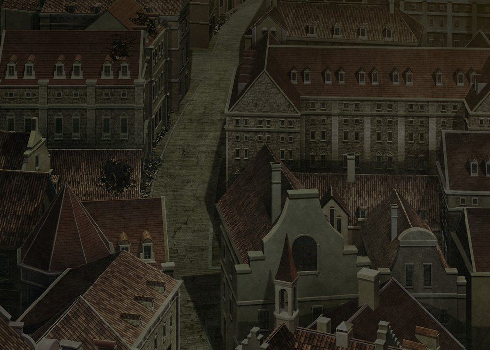
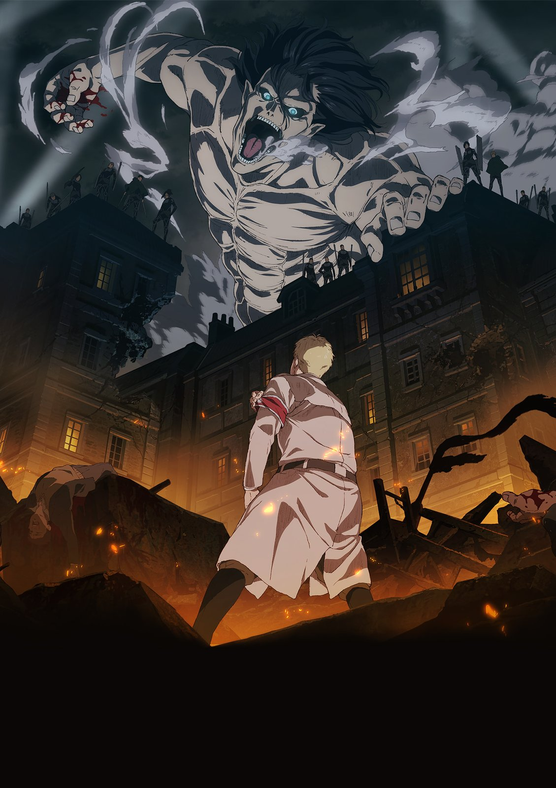
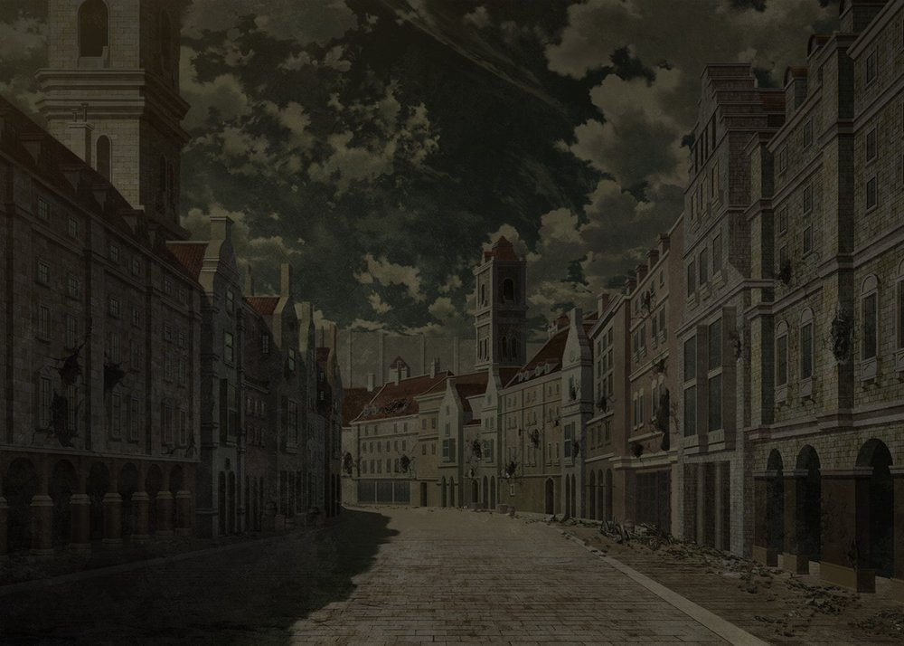
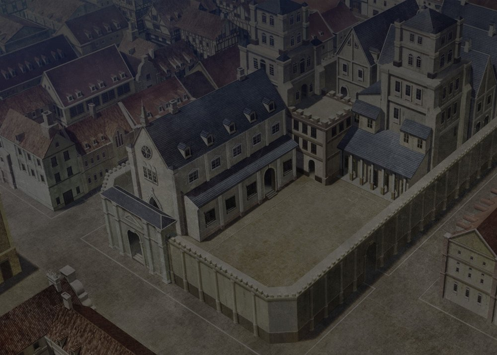
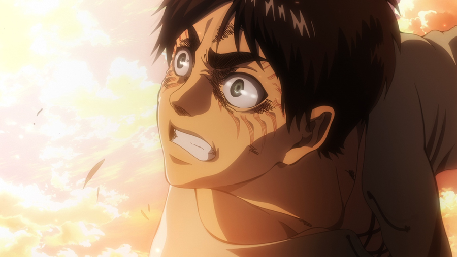
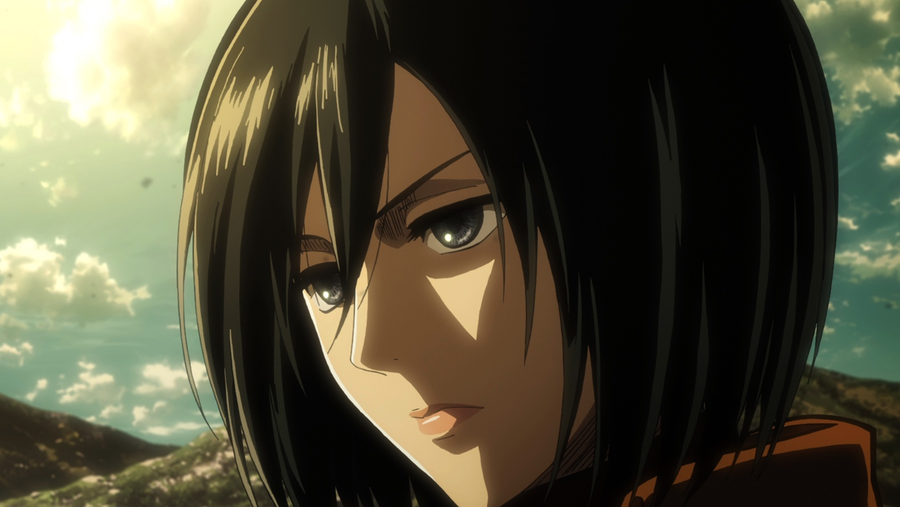
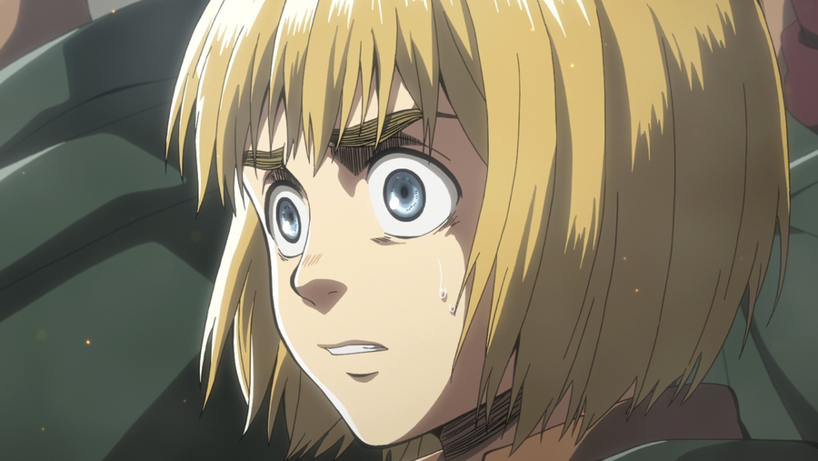
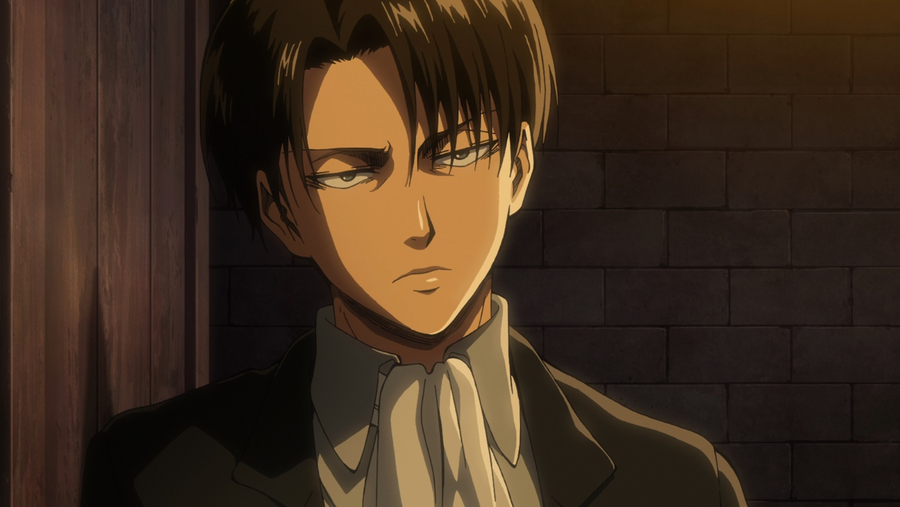

The outermost lineWall Maria
The first boundary against the outside world. Its fall in year 845 changes Eren, Mikasa and Armin’s lives forever.

A student fan website about Attack on Titan. Read about the characters, Titans and story.
Wall Maria, Wall Rose and Wall Sina protect the people of Paradis from Titans.

The outermost lineThe first boundary against the outside world. Its fall in year 845 changes Eren, Mikasa and Armin’s lives forever.

The second defenceThe middle wall shelters those displaced from Maria. Trost, its southern district, becomes a crucial test of humanity’s resolve.

The protected centreThe innermost ring surrounds the royal capital. Here, comfortable lives sit alongside carefully protected secrets.
City stills are atmospheric illustrations; they are not a map of the three walls.

A Scout who wants to see the world outside the walls.

Eren’s childhood friend and one of the strongest Scouts.

Eren and Mikasa’s friend, known for his plans and curiosity.

A Survey Corps captain known for his skill in combat.
“Shinzou wo Sasageyo!”
Dedicate your heart · The spirit of the Survey Corps